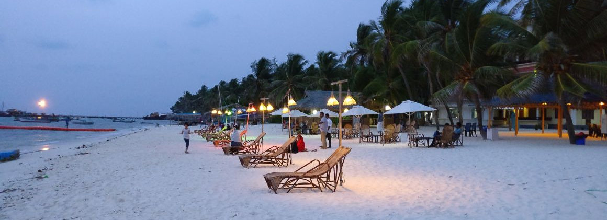

When visiting Lakshadweep, it's essential to check the entry requirements and obtain the
necessary permits. Additionally, being mindful of the fragile ecosystems and respecting
local customs and traditions contributes to responsible and sustainable tourism in this
pristine archipelago.
Places to Visit:

Kavaratti Island:
- Kavaratti Aquarium: Visit the Kavaratti Aquarium to witness a variety of marine species, including colorful coral and tropical fish.
- Ujra Mosque: Explore the Ujra Mosque, known for its exquisite architecture and tranquil ambiance.

Agatti Island:
- Beach Activities: Enjoy the pristine beaches of Agatti, indulge in beachcombing, and relax in the serene surroundings.
- Water Sports: Engage in water sports such as snorkeling, scuba diving, and kayaking to explore the vibrant marine life.

Bangaram Island:
- Beach Relaxation: Unwind on the beautiful beaches of Bangaram, known for their white sands and turquoise waters.
- Diving and Snorkeling: Explore the coral reefs surrounding Bangaram through diving or snorkeling excursions.

Kalpeni Island:
- Tip Beach: Relax at Tip Beach on Kalpeni Island, known for its long stretch of sandy shores and clear waters.
- Jalanti Shallow: Snorkel in the Jalanti Shallow area to witness the rich marine life, including coral formations and diverse fish species.

Minicoy Island:
- Lighthouse: Visit the Minicoy Lighthouse for panoramic views of the island and its surroundings.
- Turtle Nesting Grounds: If visiting during the right season, witness the nesting and hatching of turtles on Minicoy's beaches.

Pitti Bird Sanctuary (Kalpeni):
- A small uninhabited island designated as a bird sanctuary.
- Home to a variety of seabirds and a great place for bird watching.
Amini Island:
- Known for its coconut plantations and serene atmosphere.
- Visit the beautiful Amini Beach.
Things to Do:
Water Sports:
Explore the vibrant marine life by engaging in water sports such as snorkeling,
scuba diving, kayaking, and windsurfing. The coral reefs around the islands are
home to diverse marine species.

Beach Relaxation:
Spend leisurely hours on the white-sand beaches, enjoying the sun, sea, and
tranquility. Some popular beaches include Kavaratti Beach, Kalpeni Beach, and
Minicoy Beach.

Boat Tours:
Take boat tours to explore the lagoons, atolls, and coral formations. Glass-bottom
boat rides are also available, allowing you to observe the underwater world
without getting wet.

Island Hopping:
Lakshadweep is made up of several islands, and each has its own unique charm.
Explore different islands like Kavaratti, Agatti, Kalpeni, and Minicoy to
experience the local culture and natural beauty.

Visit Lighthouses:
Lakshadweep has picturesque lighthouses with stunning views. Climbing to the top
of a lighthouse, such as the one on Agatti Island, provides panoramic views of the
surrounding seas.